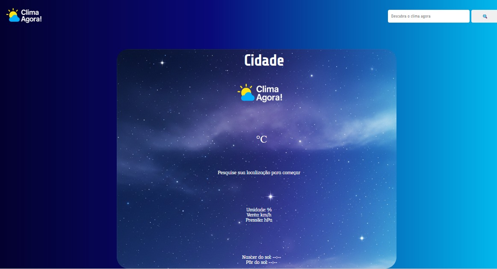
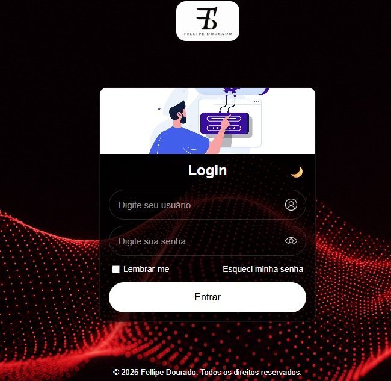
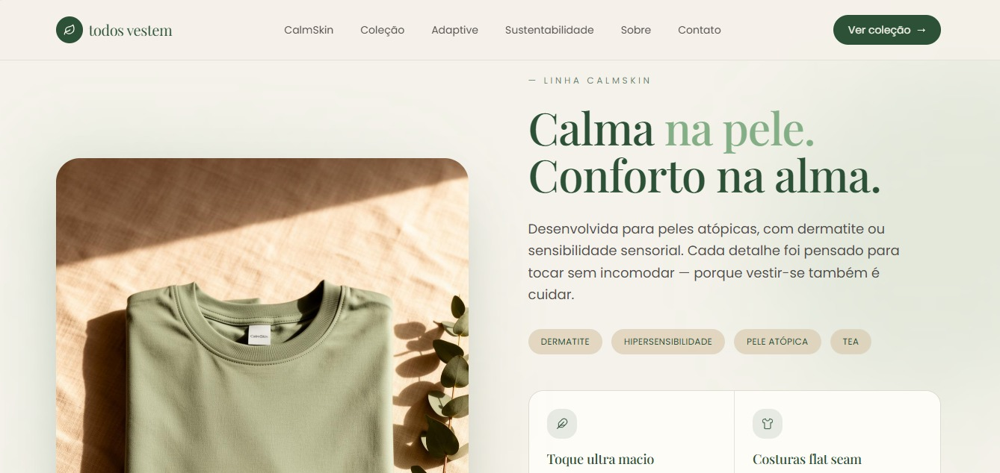
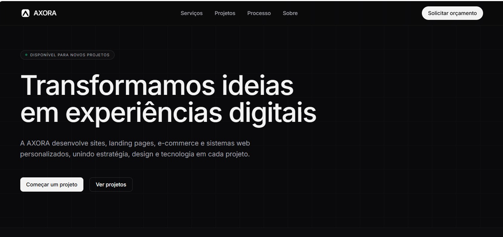

Currículo
Currículo
Fellipe Dourado
Sou estudante de Ciência da Computação na Universidade Anhembi Morumbi e atuo com tecnologia no Grupo Krona, onde tenho contato com desenvolvimento de sistemas internos, suporte técnico, testes e homologação de aplicações. No desenvolvimento web, trabalho com HTML, CSS e JavaScript na construção de interfaces e funcionalidades. Também utilizo SQL para consultas a bancos de dados e tenho experiência com análise de dados utilizando Excel, Power BI e DAX. Neste portfólio, reúno projetos que envolvem interfaces web, aplicações interativas e sistemas, demonstrando minha prática com desenvolvimento, resolução de problemas e integração entre diferentes áreas da tecnologia. Meu objetivo é evoluir no desenvolvimento de aplicações completas, desde a interface até a lógica de negócio e a persistência de dados, ampliando minhas competências em Front-End e Back-End.
Projetos
Alguns trabalhos que fazem parte da minha trajetória em desenvolvimento e tecnologia.
Clima Agora
Aplicação web desenvolvida individualmente com HTML, CSS e JavaScript, integrada à API OpenWeather para consultar e exibir dados meteorológicos a partir de uma cidade informada pelo usuário. O projeto conta com indicadores visuais conforme as condições climáticas, feedback de carregamento, tratamento de cidades não encontradas e layout responsivo, proporcionando uma experiência de uso intuitiva em diferentes dispositivos.
HTML · CSS · JAVASCRIPT · API OpenWeather
02Tela de Login
Desenvolvimento de uma interface de login com foco na organização visual, usabilidade e apresentação dos elementos. O projeto utiliza HTML e CSS para estruturar e estilizar a página, além de JavaScript para implementar a alternância de tema, permitindo modificar a aparência da interface durante a interação.
HTML · CSS · JAVASCRIPT
03Todos Vestem Bem
Projeto acadêmico desenvolvido para o SENAC, com auxílio do Lovable, voltado à criação de uma loja virtual de roupas. A aplicação reúne funcionalidades de comércio eletrônico, incluindo catálogo de produtos, carrinho de compras, finalização de pedidos e telas de login e cadastro de usuários. O projeto proporcionou experiência na construção de uma solução web interativa, explorando a organização de interfaces e os principais fluxos de navegação de uma loja virtual..
Lovable.
04Axora
Desenvolvimento completo do site institucional da AXORA, iniciativa voltada a soluções digitais nas áreas de Web, Design e Tecnologia. O projeto apresenta os serviços oferecidos, organiza as informações institucionais e disponibiliza um formulário de contato com integração a uma API para validação de e-mail. O desenvolvimento envolveu a construção da interface, a organização das páginas e a implementação de funcionalidades para melhorar a experiência de navegação e facilitar o contato com potenciais clientes.
HTML · CSS · JAVASCRIPT · DESIGN · API · FIGMA · SQL
05Intranet
Desenvolvimento de um sistema de intranet do zero, com funcionalidades voltadas ao gerenciamento de usuários, controle de acessos e auditoria de permissões. A aplicação conta com tela de login, cadastro de usuários e recuperação de senha com validação por e-mail, além de módulos para consultar ferramentas corporativas vinculadas, perfis de acesso dos usuários e informações sobre servidores. O sistema permite centralizar informações relevantes para a administração dos acessos, facilitando a consulta e a auditoria de permissões. As funcionalidades estão integradas a um banco de dados MySQL, com persistência das informações. Principais funcionalidades: · Autenticação e cadastro de usuários. · Recuperação de senha com validação por e-mail. · Consulta de ferramentas corporativas vinculadas. · Portal de usuários para consulta e auditoria de perfis de acesso. · Módulo de servidores para consulta e auditoria de informações. · Integração com banco de dados MySQL.
HTML · CSS · JAVASCRIPT · SQL
Experiência
Experiências que contribuíram para minha formação em tecnologia e desenvolvimento.
Criação de projetos pessoais e acadêmicos
Desenvolvimento de projetos web que transformam ideias em interfaces funcionais, unindo programação, design e experiência do usuário.
Jovem Aprendiz — Gerenciamento de Risco
Atuação na área de tecnologia e gerenciamento de risco, apoiando processos internos, suporte a sistemas, análise de dados, testes e desenvolvimento de soluções para sistemas corporativos.
Formação Acadêmica
Minha trajetória acadêmica e desenvolvimento na área de tecnologia.
Bacharelado em Ciência da Computação
Graduação em andamento, com foco na formação em computação, programação e desenvolvimento de software.


.png)
.png)